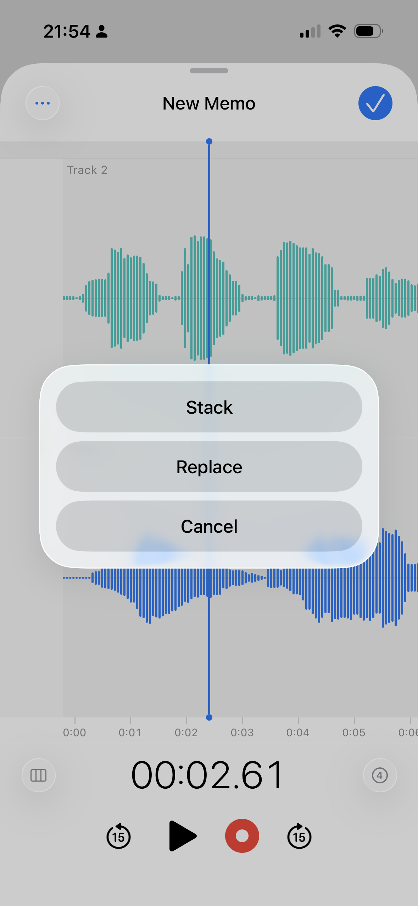

Stack
Layer new takes over what you already recorded.
Overdub with a monitor mix so harmony, percussion, or a second vocal lands in the same memo. Headphones recommended for a clean stack.
- Record a new layer while hearing what you already captured.
- Keep everything in one memo — no bouncing between apps.
